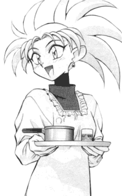

Crossover FanFics: S-Z
|
This page holds crossover fan fiction that includes Tenchi Muyo. Crossovers
are very intresting. They really change the character interactions since
the mixing of diffrent worlds, series, situations, can change the dynamic
of the story. Please go here if you would like your
works published. |
New * A-C *
D-J * K-R * S-Z |
S
Ian Sagat
(eraser1976@hotmail.com)
-
Absolution Chaos
Follow the Tecnhi crew as they attend a Toonami reunion party onboard
The Absolution! Hilarity ensues! 33KB -6/22/2002
SageFire
(byrdhaus@netins.net)
Sage Halo
(sagehalo@hotmail.com)
Sailer Jerpury
(Daveohki@aol.com)
SailorAekaNataku
(moongirl@gci.net)
Sailor_Saturn_aka_Hotaru
(Sailor_Death_Saturn@sailormoon.com)
Saiyan Moon Goddess
(ryoko@coqui.net)
-
War, Loss, and Love
Tenchi/DBZ crossover Ryoko disappears from the Masaki house, leaving
everyone (except Ayeka) confused. While Tokimi has her own plans to tranform
her into a Living Legend, or a Living Weapon. (Multipart) -9/13/2002
-
Ginkoneko Hikari
What if a new girl with silver hair and golden eyes goes to the same
school as Trunks, Bra, and Goten, and falls in love with Trunks?
Romance/Mystery/Drama/Angst. (Multipart) -9/13/2002
-
The World of Endless Tears - Chapter 1
: "Happiness in Life Never Lasts Forever"
(Prequel to Ginkoneko Hikari) It tells a depressive story of Ryoko
and Tenchi and how they struggled to survive the living hell on Earth. Who
will stay standing in the end? DBZ Xover later. 19KB -9/13/2002
Samira (Bridge3@yahoo.com)
SarahMc
(catwoman@merseymail.com)
Sheik "Dragoon" Saranak
(Dragoon@woh.rr.com)
Trevor Scanlon
(TenchiM45@aol.com)
-
Chrono Muyo Saga
A cross of Tenchi Muyo and Chrono Cross. (Multipart) -1/22/2001
Nathan "Micron Shark" Schmitz
(MSHARK999@aol.com)
SgtRanma (SgtRanma@yahoo.com)
-
Officer Saotome
Ranma Saotome has gone some tough things in the past nine years after
Jusendo, things are about to change when he gets a job in Okayama. (Multipart)
-2/25/2002
-
Only You - Chapter 1 : "Meet Mihoshi
Kuramitsu"
Mihoshi loses someone very precious in her life, now she must cope
with a horrible depression. This is a divergence from "Officer Saotome",
which must be read first to understand this fic. 44KB -7/26/2001
Shade
(rowan-phoenix@usa.net)
Derek Sherman
(Doppleganger@usa.pipeline.com)
Jamie "Warhammer 40K Fanatic" Sherman
(pepper4099@aol.com)
-
Warhammer 40K Muyo!
Tenchi and the gang get transported to the Warhammer 40K universe.
Mayhem abounds! (Multipart) -12/23/2001
Sho Ishogi (pakman11@1st.net)
Short Yes (ShortYes@aol.com)
-
Revenge
A multiseries revenge fic that includes Tenchi Muyo. 45KB
-4/18/1998
W. Showers
(MShowmoney@aol.com)
The Silver Chocobo
(silverchocobo@usa.net)
Silver Wolf
(Thesurfer269@aol.com)
Small Goddess Washu
(iamabrat@voyager.net)
-
DBZ Muyo
Washu creates a new invention and Mihoshi accidentally activates it
sending the characters from DBZ to the Masaki house. Ryoko loves who?! 17KB
-9/20/2001
Kenny "Street Magic Kid" Smith
(MajikPotter@aol.com)
Quinn Smith (qes23@aol.com)
-
Visagothy
Our story begins. (Multipart) -3/11/2002
Mike Smith
(mike_p_smith@prodigy.net)
-
The Inhuman Condition
A mysterious new alien arrives at the Masaki household and--Nah, I
won't lead you on. It's Superman. (Multipart) -5/6/2002
Tiffany "UniversalAnimeGirl" Soewadji
(Tiff0307@aol.com)
SoJ (tenchigirl@msn.com)
-
Black Hole
Selenity stole my idea for going past the edge of the universe.
(Multipart) -9/13/2002
-
Nine Princesses
Raye has a strange vision. Who is the mysterious young man? (Multipart)
-5/30/2002
-
The Stranger - Prologue
Lord of the Rings. 7KB -9/13/2002
-
Regretting
Serena is married to Tenchi in this one, and Raye is married to Darien,
(Rini is their daughter). 22KB -9/13/2002
Son Goharotto
(son_goharotto@hotmail.com)
-
Vegeta Muyo!
The young Saiyajin Prince lands in Tenchi's carrot field. (Multipart)
-3/27/2002
Sovereign Ryoko
(Elenorgby1@aol.com) and Avalon
Peacecraft
(theladyryoko@aol.com)
Space Pirate "Scarfe" Coral
(adelbertsteiner@planetjurai.com)
-
Tenchi Fantasy IV
The Tenchi Muyo gang enter the Final Fantasy World with VI's Kefka,
along with IX's Kuja Tribal and Necron as the villians. (Multipart)
-11/11/2001
Spanner (spanner@visi.com)
-
Mayuka's Day Out
Washu takes Mayuka to Tokyo Tower. Nothing ever goes wrong at Tokyo
Tower, right? TM/SM/MKR. 24KB -4/16/2001
Jeff Springman
(Solo128@excite.com)
-
A New Threat
Final Fantasy VII characters in the world of TM. (Multipart)
-4/2/2001
_-SSJVegeta-_
(sirlukav@hotmail.com)
Gerrad "Thane" Stamper
(XDarkThane@AOL.com)
-
Slayers Muyo! - Part 1
X-over fic that involves time travel, magic, and quite a bit of fighting
and many arguements. 8KB -10/3/1998
StanleyA1 (StanleyA1@aol.com)
Patrick M. "Seion" Stewart
(seion@mail.earthlink.net)
Patrick M. "Seion" Stewart
(seion@mail.earthlink.net)
and Literary Eagle
(literaryeagle@hotmail.com)
-
A Startica Song
A Tenchi-cized version of "A Christmas Carol". (Multipart)
-12/20/1999
Karmin "Sephiroth" StJean
(Trakal@map.com)
James Stone
(Jamess@worldgate.edmonton.ab.ca)
and Danial Ross
Nicholas Stone
(bnstone@ix.netcom.com)
-
Chronicles of the Sekigahara - Book One
: "Mihoshi Luck"
Tenchi is in command of a futuristic Figher/Attack squadron during
a major intergalactic war. He's not only got Ayeka and Ryoko to contend with,
but also Mihoshi, whose uncanny "luck" is driving Washu crazy. 137KB
-3/6/2000
StOriKami
(JoPf.mz@t-online.de)
-
Aleph-Four
Reality seems to be mutable... and a matter of opinion if several
different ones contain meddlers. And fumblers. And time loops. Oh my! -
(Multipart) -4/17/2000
SuperGohan
(supergohan@hotmail.com)
Super-Sayain2 Gohan
(Vegeta101485@aol.com)
Suupaa Veggitto
(Super_Veggitto@hotmail.com)
-
Sailor Dragon Muyo
Tenchi Muyo, Dragonballz, and SailorMoon meet in an epic three way
crossover. (Multipart) -4/3/2000
Peter
Suzuki.(peter_suzuki@hotmail.com)
T
Akebono "Basho Benihanna" Takahanna
(akebono_b_b_takanahanna@hotmail.com)
-
No Need for More Headaches
Mihoshi finds the Dragon Balls(all seven) behind the Masaki pool and
makes a dreadful wish. (Multipart) -12/20/2001
Tao Child
(KeytotheLeyline7@aol.com)
-
Enter the Outlaws
What happens when a spaceship from another anime show crashes in the
carrot field? (Multipart) -10/8/2001
Kathy "Lunar" Taylor
(Sodjin_fighter@hotmail.com)
-
The First Female Super Saiyan
Gohan has started life at Orange Star High, and he runs into the
mysterious Chakira. Something is up with her, and Gohan really wants to know
what powers she could possess. (Multipart) -4/8/2002
Matt Taylor
(MattTaylor20@CS.com)
Teknos Warhammer
(Teknoplus@hotmail.com)
The Tenchi Reader
(ssgundam72954@aol.com)
Tensai no Miko
(hakubi_washu-chan@juno.com)
-
No Need for Dungeons
See what happens when the Tenchi gang enters the world of Dungeons
& Dragons. 46KB -5/21/2001
T.H. Tiger
(Schell@interlog.com)
TimeRunner
(Keiichi@i-manila.com.ph)
-
Snapshots
A snapshot of what a character thinks at a certain time. 9KB
-5/16/1998
-
The Sum of All Parts
A X-over FF cotaining EVA, MI, Nuku-nuku and TM! (Multipart)
-9/5/1998
David J Thompson
(davidjspokane@juno.com)
Thrythlind Hardwulf
(thrythlind@yahoo.com)
-
Ryoko Saotome
A Tenchi Muyo and Ranma 1/2 crossover. (Multipart) -9/20/2000
-
Family Trees
Multi crossover including Ranma, Slayers, Tenchi, Lodoss, and others.
(Multipart) -6/21/2000
Treize Peacecraft
(treize_peacecraft@hotmail.com)
-
New Bounty
Tenchi Muyo! and Cowboy Bebop crossover. 29KB -8/21/2000
John E. "Trom" Trombley
(Trom2@together.net)
-
The Game
A Multicrossover FF. 101KB -4/18/1998
Tsun Mei
(lilenjeru@yahoo.com)
U
Ultima Trev Flickinger
(superultimatrev@netscape.net)
UltraOverMind
(aegisrunestone@hotmail.com)
Unholydragoon (Drezmm@aol.com)
-
K-1 Goddess Syndrome
This is a small Ah! My Goddess! crossover about a "simple" dinner
invitation. 50KB -7/30/2001
The Unknown DJ
(theunknowndjendz@yahoo.com)
V
Richard "Shin Akuma" Valdez
(shinakuma@planetjurai.com)
Michael Valdivielso
(ValdivielsoB@aol.com)
Vandalier
(tenchimod@yahoo.com)
Amanda Vaughan
(MidnightNation@aol.com)
Vise (IvyMurphy2@aol.com)
V. M. Toumbes
(VMToumbes@aol.com)
-
U-MAG - Volume 1
Next chapter contains X-over elems, hence the chapter's placement
here. 45KB -9/22/2000
W
Bradford "Phantom Spider" Wall
(bwall317@hotmail.com)
-
Starting Over
A mysterious young man saves Gohan, before Raditz can deliver the
final blow. (Multipart) -2/25/2002
-
Scattered
Scattered to four remote sectors of the Galaxy, the heroes from the
SO series must find a way back home, as a galactic war is starting. (Multipart)
-4/23/2002
WallyW
(mcw2879@students.ssu.edu)
-
Light Hawk, Dark Knight
Batman meets up with the gang from Tenchi Universe. Part one sees
some serious kung-fu fighting, and a hint of menace. (Multipart)
-9/21/2001
Loren Ward
(loren_ward@hotmail.com)
WarOmnimon
(waromnimon@hotmail.com)
Washu
(washu@washu-hakubi.com)
-
Tenchi Survivor - Part 1
Washu makes a machine that sends everyone to an island... who will
survive?? Based off the TV Show. 7KB -12/22/2000
Robert "Lobster" Watson
(supahcoolrw@hotmail.com)
Joshua "Kartman" Wayne
(firstdraconan@msn.com)
-
WWF Blackballed
The casts of many RPGS, Tenchi, Those who hunt elves, and the WWF
clash in 17 gut-bustingly funny matches! 101KB -12/22/2000
Bryan Weber
(drummondtype2@hotmail.com)
and Glyph Bellchime
(babcoch2313@uni.edu)
Webmaster Hwoarang
(Webmaster@tekken_shrine.zzn.com)
-
War of Demons
The love that grows between a demon hunter and Ryoko and a war that
is caused by the demon hunter's actions. (Multipart) -1/22/2001
Webmaster Washu
(yorba12@hotmail.com)
Marc "Warwolf" Weinstein
(Warwolf243@aol.com)
-
Spirits Of Remembrance
After chewing out Ryoko and Ayeka, Ryoko and Zero Separate. And Japan
plays host to....a new GHOST RIDER?! (Multipart)
-10/23/2000
Paul Wetzstein
(royalteardrop@yahoo.com)
W*ING Higley
(cactusnick@yahoo.com)
-
The Apprentice
Ayeka leaves, while Ryoko makes a shocking deal in
this Starwars/Tenchi fusion. 13KB -9/9/1999
Timothy Alan Weaver
(weaver_sas@yahoo.com)
Weepinbell
(weepinbell70@yahoo.com)
Doug Whiddon
(turk187@crosswinds.net)
White Raven
(trunks_vs_cactus@hotmail.com)
-
The Infinite
A strange being appears with some rather weird ideas for fun. (Multipart)
-3/26/2002
Edward Wingfield
(usagi_kun@hotmail.com)
X
Y
David Youngquist
(yqwlake@home.com)
Michael Yu (Myuyu@ucdavis.edu)
Z
ZeroFun999
(Arshak999@yahoo.com)